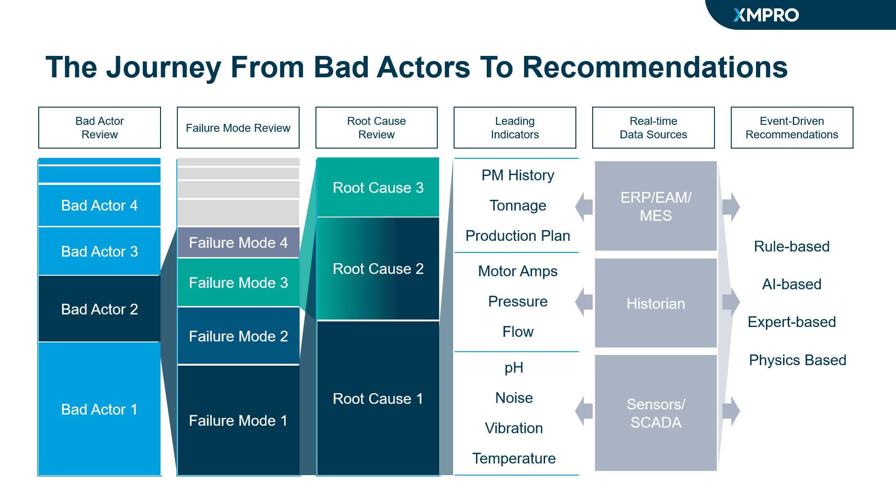
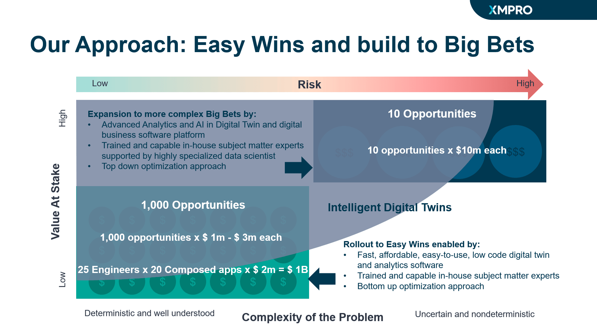
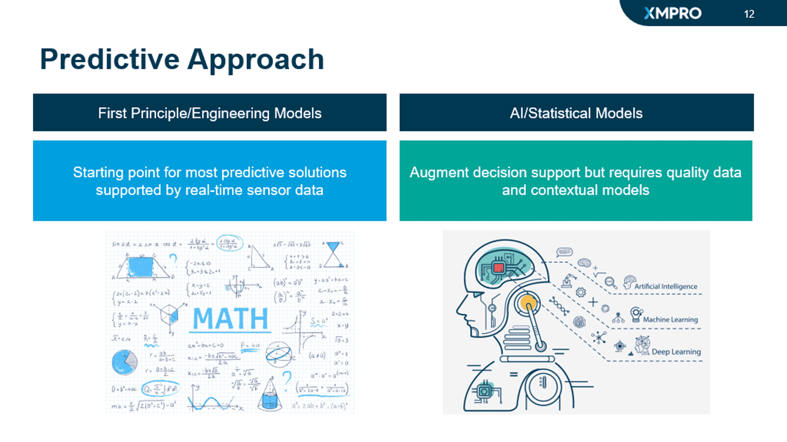
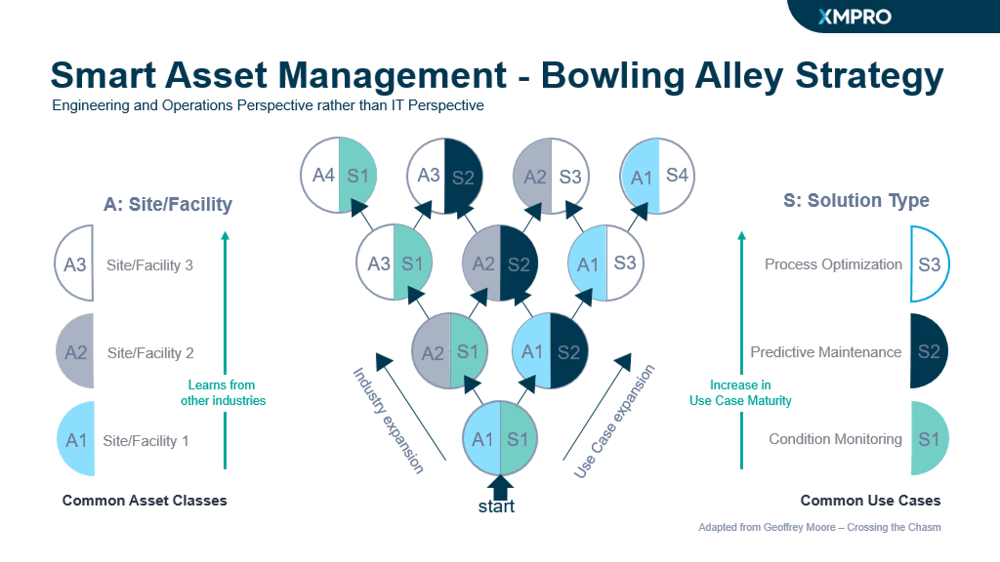
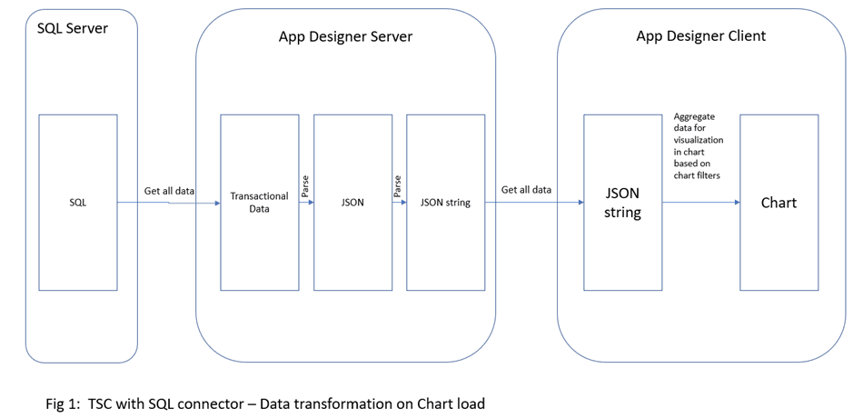
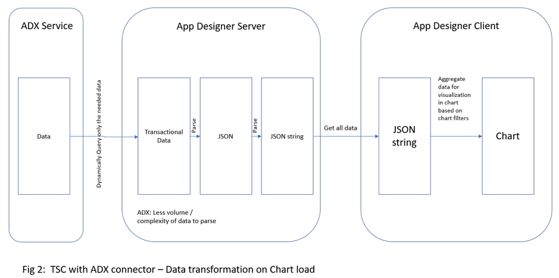

Implementation
Find answers to some of the most frequently asked implementation questions.
Starting Out
Where do I start with XMPro?
XMPro strongly recommends that all projects should have a defined ROI. Therefore the initial Use Cases, collection of data pertaining to the Business Problems that you are seeking to resolve, and evaluation of project outcome at the midpoint and project close are vital to substantiate the ROI.
A synopsis of our framework for a project is as follows:
- Define the Business Problem that needs to be addressed
- Identify Bad Actors
- Care must be taken to identify the initial Use Case
- Gather data for the initial Proof of Value or Pilot
- Commence Proof of Value or Pilot
- Hold a mid-point review & measure success against these questions
- Does the tool work?
- Does it deliver value?
- Would the customer use it?
- Collect the ROI achieved in the Pilot Period
- Project Gate = Go / No Go decision

To build a Digital Twin of a factory, do I start with the whole factory or start small?
Always start small. Digital transformation is achieved by many small projects that lock in success at each step. The overall goal is to achieve project success early and expand.
There will be many challenges for you to achieve success, by starting with small projects you lower the overall risk of failure. The positive flip side of small projects is that you fail fast, and the costs are limited.

I want Predictive Maintenance, and I want it now.
We think it makes sense to think of two components of PdM (Predictive Maintenance):
- First Principle / Engineering Models – The starting point for most predictive solutions supported by real-time sensor data
- AI / Statistical Models – Use the AI / Statistical models to augment decision support but requires quality data and contextual models
Subject to quality data, the First Principle / Engineering Models are the fast start as the formula is agreed upon and the model is ready to go. AI / Statistical Models require more effort and analysis – one will need the assets failure history and time and resources to refine your models.

Another view of your predictive maintenance goal is to consider the maturity of the use cases. Smart Asset Management includes the smart use of condition monitoring, predictive maintenance, and process optimization.

What is XMPro's approach to AI?
XMPro is not an AI company. We can call the AI / Statistical models and use the output to trigger recommendation alerts, but the models are sourced from you or one of our AI partners.
How does XMPro do it? We provide integration building blocks in our Data Streams to call the model and use the model output for computation of the real-time data stream, which is used in the creation of a recommendation for the asset.
XMPro has the capability to pass data to Azure Machine Learning and train models. These models can be called by other XMPro Data Streams to use the model output for evaluation of real-time streaming data. For example, the RUL of a Secondary Crusher.
Further Reading
I've seen Mining examples. Can XMPro compose a Digital Twin for utilities?
Yes, we can. In 2021/22 XMPro predominantly worked in the Mining and Oil & Gas sectors, and we are now expanding to other asset-intensive industries such as Utilities and Chemicals.
These asset-intensive industries all have similar equipment, challenges, and use cases. We find that we can transport solutions from one to the other in these industries. The lessons learned from Mining can accelerate solutions for Utilities, bringing a slightly different perspective on how to approach challenges from a "bad actor" and failure analysis point of view rather than a traditional "similar industry" approach.
Below is our strategy for expansion in asset-intensive industries with transferable use cases around asset availability problems.
Architecture
Can XMPro be installed and used on-premise?
Yes. Currently, the majority of XMPro deployments are Cloud-based. XMPro can be deployed on-premises, on Azure/AWS, or as a hybrid with parts on-premises and in the cloud.
Typically for the hybrid deployment, the stream host is deployed on-premises with the core application being hosted on the cloud.
On-premise deployments have been driven by the need for remote locations, as well as constraints on internet access from within a corporate network.
If XMPro is in the Cloud, can I connect to my On-Premise application(s)?
Yes. If your applications are internet-facing, then a cloud stream host can be used. If your applications are behind a firewall and internal to your network, then in this instance XMPro will be a hybrid deployment model, with the stream host located on-premises.
Do I need a separate server for the stream host, or will it run on the same application server?
The preferred approach is to have a separate infrastructure for the stream host.
It is possible that your XMPro deployment has only one Stream Host. However, this is rarely the case and we suggest the following considerations:
- Consider each location having a dedicated Stream Host
- A critical Data Stream, like pressure readings on a pressure vessel, may have its own dedicated Stream Host
- If a payload for a Data Stream is large and frequent, then consider a dedicated Stream Host for that Data Stream.
- Having several Stream Hosts can improve the resilience of your system
- Network latency and geographical spread could be factors in considering the case for multiple Stream Hosts
Performance
A look beneath the hood of XMPro Charts and Time Series Analysis Charts
Often the first time that users are aware of the components that make up XMPro charts is when they experience slow rendering times. This article seeks to explain the structure behind the XMPro charts and the components that impact chart performance.
Performance is not limited to the Time Series Analysis as the same pattern pertains to other XMPro charts too, such as the Chart Block. With an understanding of the influences on chart performance, the reader will be in an informed position to address their requirement.
The current Time Series Analysis use SQL and Azure ADX as data sources.
XMPro as an Event Intelligence platform
XMPro is purpose-built to manage events in real-time. This means its technologies can be used for Business Intelligence purposes.
The processing of large swathes of past time series data is possible, but there are circumstances where this will not be an optimal user experience as the connectors work on the basis of 'Get All Data' and not incremental steps like for example, Grafana.

XMPro App Designer Server memory scenarios
The XMPro App Designer Server will reserve the required memory for each unique query while there is at least 1 active user interacting with it. A unique query is defined as a Time Series Chart instance, with the same date selection and same data source. The number of concurrent queries with at least 1 active user will have an influence on the XMPro App Designer Server performance.
If one user runs a query that consumes 2 GB of server memory and a different user performs that same query, then the server consumes no additional memory and instead used the cached query.
If a different query is run that consumes 4 GB of server memory, then a total of 6 GB of memory would be consumed, and so on. Depending on the server configuration this could impact overall server performance and response time (user experience)."
Settings that could impact performance
There are several influences on XMPro App Designer Server and XMPro App Designer Client performance. The main influences would include:
- Web Server memory
- Web Server CPU
- Load balancing / Auto Scaling (scale out)
- Data Size (size and number of rows)
- Data Complexity (type and relationship of data)
- Where aggregation is performed (Data Layer vs Web Server vs Chart Control)
- Network speed and reliability (Data Layer, Web Server, and Client Browser)
- Client Available CPU speed
- Client Available Memory
- Web Browser and Version
- XMPro Platform Version
SQL vs ADX
The first consideration that impacts response time is the amount of data queried at the data source and the volume of data transmitted in response. The second consideration is the volume and complexity of data that the App Designer Server needs to parse.
Figures 1 & 2 illustrate the reason for the improved performance of ADX over SQL.
Amending the aggregation period will be almost instantaneous on ADX. On SQL this is likely to be slower.

Issues for consideration to address overall performance
- The Time Series Analysis data loads initially and then again whenever the date selection is changed.
- Thus the initial selection should be limited, e.g. 3 hours.
- The appropriate initial selection depends upon the frequency of data points, i.e., if the time interval is every second, every minute, or every hour.
- The number of assets affects performance - not whether they are selected. All data points for all assets for the data range selection are loaded so that the query does not need to be reloaded when a user changes their asset selection.
- Limit the number of records fetched from the source system, either by using aggregation at the source if possible (or) by limiting to a shorter date range selection.
- Consider whether this is tracking events in real-time or requires discovery in a BI environment.
- Consider the number of simultaneous users and unique query combinations and whether sufficient resources have been allocated.
Appendix 1: Elapsed Time for Time Series Analysis, Regular Charts, and D3 Charts
Last modified: November 27, 2025